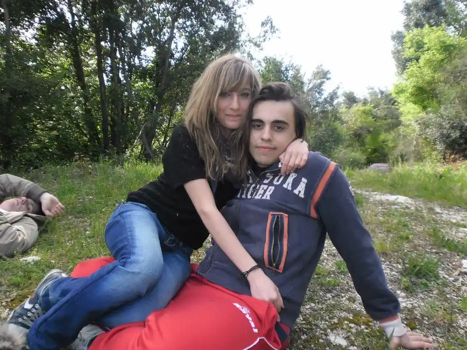
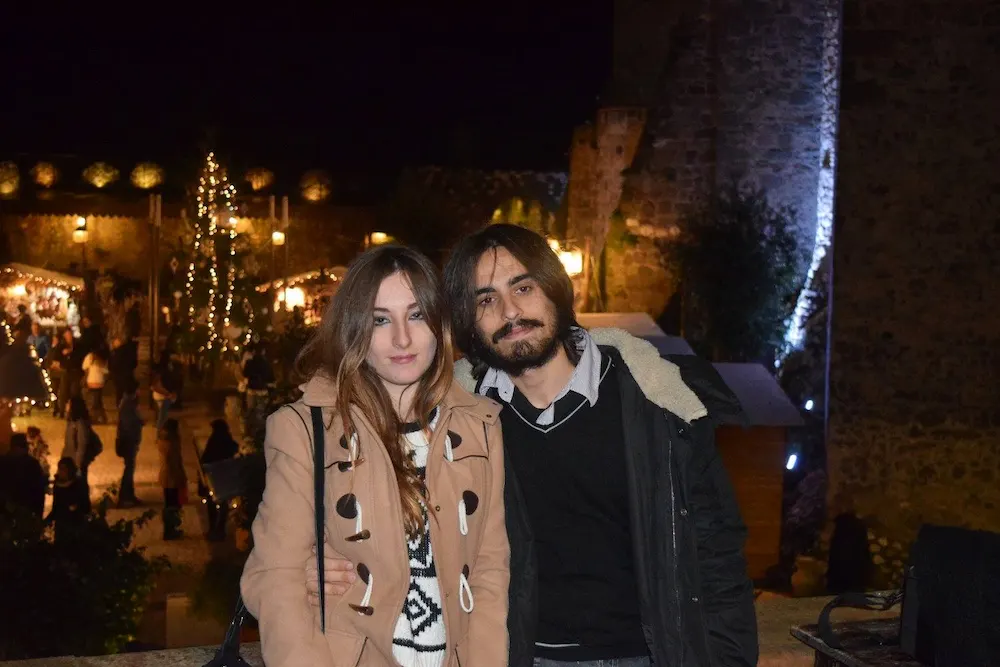
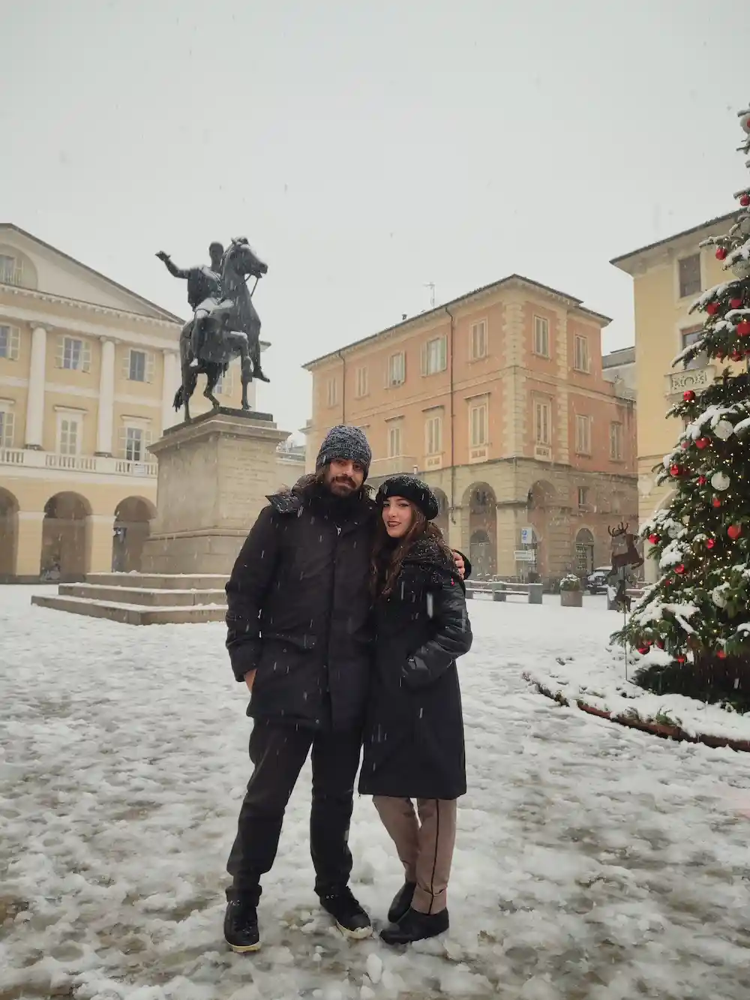
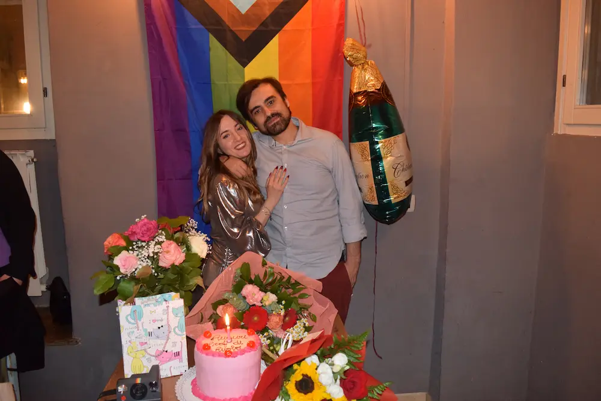
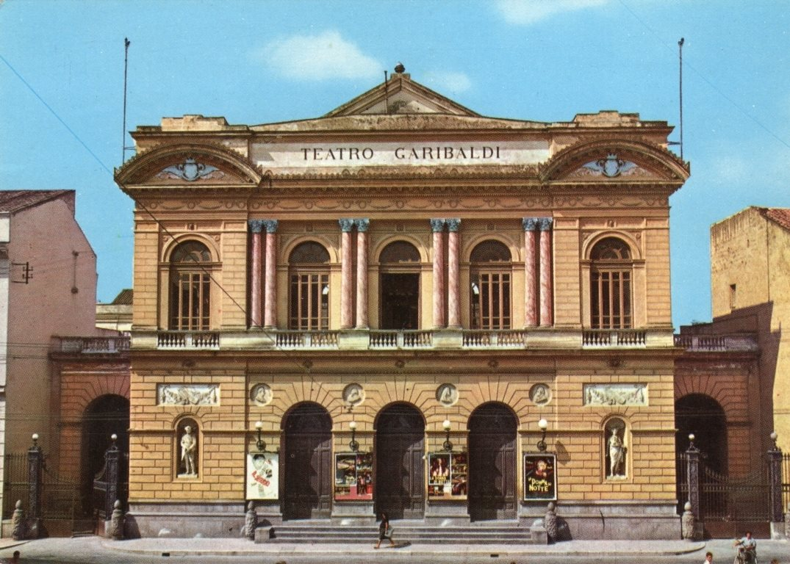

Ines e Antonio
26 Aprile 2026
Giorni all'evento:
15 anni di noi
-
 Terracina - Italia 2012
Terracina - Italia 2012 -
 Palau de la musica Catalana - Barcellona 2017
Palau de la musica Catalana - Barcellona 2017 -
 Bruxelles - Belgio 2018
Bruxelles - Belgio 2018 -
 Firenze - Italia 2019
Firenze - Italia 2019 -
 Napoli - Italia 2020
Napoli - Italia 2020 -
 Annecy - Francia 2022
Annecy - Francia 2022 -
 Parigi - Francia 2022
Parigi - Francia 2022 -
.webp) Parigi - Francia 2022
Parigi - Francia 2022 -
 Lucerna - Svizzera 2023
Lucerna - Svizzera 2023 -
 Moco Museum - Olanda2023
Moco Museum - Olanda2023 -
 Giethoorn - Olanda 2023
Giethoorn - Olanda 2023 -
 Zaanse Schans - Olanda 2023
Zaanse Schans - Olanda 2023 -
 Christiania - Danimarca 2024
Christiania - Danimarca 2024 -
 Leire - Danimarca 2024
Leire - Danimarca 2024 -
 Mon - Danimarca 2024
Mon - Danimarca 2024 -
 Ribe - Danimarca 2024
Ribe - Danimarca 2024 -
 Aahrus - Danimarca 2024
Aahrus - Danimarca 2024
La nostra storia...
-
Da quindici anni camminiamo fianco a fianco, le nostre vite si sono intrecciate a poco a poco, giorno dopo giorno, sfidando il tempo e la distanza, fino a diventare una sola trama.
Da quindici anni camminiamo fianco a fianco, le nostre vite si sono intrecciate a poco a poco, giorno dopo giorno, sfidando il tempo e la distanza, fino a diventare una sola trama.
-

-

-
Mentre noi crescevamo, mentre i nostri sogni crescevano, cresceva anche la nostra storia; ogni cambiamento lo abbiamo vissuto come un passo comune, ogni traguardo personale come il risultato di una lotta combattuta sullo stesso fronte.

Mentre noi crescevamo, mentre i nostri sogni crescevano, cresceva anche la nostra storia; ogni cambiamento lo abbiamo vissuto come un passo comune, ogni traguardo personale come il risultato di una lotta combattuta sullo stesso fronte.
-

-
Abbiamo percorso le nostre vite vedendo ed esplorando il mondo attraverso gli occhi dell'altro, lasciandoci formare dalle esperienze vissute insieme, lasciandoci influenzare da quelle dell'altro, giocando a mescolare idee diverse e a mettere insieme i personali punti di vista.

Abbiamo percorso le nostre vite vedendo ed esplorando il mondo attraverso gli occhi dell'altro, lasciandoci formare dalle esperienze vissute insieme, lasciandoci influenzare da quelle dell'altro, giocando a mescolare idee diverse e a mettere insieme i personali punti di vista.
-

-
In questi quindici anni non siamo rimasti uguali a noi stessi, ma siamo mutati allo stesso ritmo, e se oggi siamo le persone che siamo, è perché abbiamo imparato a esserlo insieme.
In questi quindici anni non siamo rimasti uguali a noi stessi, ma siamo mutati allo stesso ritmo, e se oggi siamo le persone che siamo, è perché abbiamo imparato a esserlo insieme.
-

-

-

-

-

-
No, non ci siamo completati: ciascuno di noi è nato completo, ma l'altro ne è stato il potenziamento e la piena realizzazione, megafono di potenzialità che altrimenti sarebbero rimaste inespresse e di possibilità che sarebbero rimaste inesplorate.

No, non ci siamo completati: ciascuno di noi è nato completo, ma l'altro ne è stato il potenziamento e la piena realizzazione, megafono di potenzialità che altrimenti sarebbero rimaste inespresse e di possibilità che sarebbero rimaste inesplorate.
-

-
La nostra storia è fatta di continue scoperte e nuovi progetti, ma anche di quotidianità, di responsabilità, di scelte ripetute ogni giorno: sceglierci ancora, affrontare ogni difficoltà, riconoscerci, sostenerci.

La nostra storia è fatta di continue scoperte e nuovi progetti, ma anche di quotidianità, di responsabilità, di scelte ripetute ogni giorno: sceglierci ancora, affrontare ogni difficoltà, riconoscerci, sostenerci.
-
Il matrimonio non è l'inizio del nostro cammino, ma la naturale continuazione di una vita già profondamente condivisa. È il nostro modo di dichiarare al mondo che questo intreccio, che intessiamo da tutta la vita, è tra le cose più preziosa che abbiamo costruito, forse il presupposto di ogni successo, ma anche il punto di arrivo che ha motivato ogni scelta. Con le nostre nozze ci promettiamo quanto già ci diamo ogni giorno, e che vogliamo continuare a custodire insieme.

Il matrimonio non è l'inizio del nostro cammino, ma la naturale continuazione di una vita già profondamente condivisa. È il nostro modo di dichiarare al mondo che questo intreccio, che intessiamo da tutta la vita, è tra le cose più preziosa che abbiamo costruito, forse il presupposto di ogni successo, ma anche il punto di arrivo che ha motivato ogni scelta. Con le nostre nozze ci promettiamo quanto già ci diamo ogni giorno, e che vogliamo continuare a custodire insieme.
Cerimonia
Cerimonia
Teatro Garibaldi

Orario - 10:30

Corso Giuseppe Garibaldi, 78, 81055 Santa Maria Capua Vetere (CE)
Informazioni utili
- Non è consentito lanciare riso o petali dentro e fuori la struttura.
- Durante il rito civile sarà possibile, per chi lo desideri, intervenire per dedicare un breve discorso agli sposi.
Ricevimento

Ricevimento
Villa Cilento
A seguire...
Via Torre Ranieri 5, 80123 Napoli (NA)
Informazioni utili
- La struttura offre un ampio parcheggio privato. Dopo aver lasciato l'auto, una comoda navetta ù vi porterà direttamente all'ingresso della villa.
- Il menu previsto è a base di pesce. Chi volesse optare per un menu di terra o vegano, lo comunichi agli sposi in tempo utile (NON il giorno della cerimonia).
- Comunicare eventuali allergie, intolleranze e/o impossibilità di salire le scale.
Info utili
Teatro Garibaldi
- Non è consentito lanciare riso o petali dentro e fuori la struttura.
- Durante il rito civile sarà possibile, per chi lo desideri, intervenire per dedicare un breve discorso agli sposi.
Villa Cilento
- La struttura offre un ampio parcheggio privato. Dopo aver lasciato l'auto, una comoda navetta ù vi porterà direttamente all'ingresso della villa.
- Il menu previsto è a base di pesce. Chi volesse optare per un menu di terra o vegano, lo comunichi agli sposi in tempo utile (NON il giorno della cerimonia).
- Comunicare eventuali allergie, intolleranze e/o impossibilità di salire le scale.
I ruoli della cerimonia


La vostra presenza,
il vostro regalo
Comunicatela con un messaggio!
Contattaci su WhatsAppAl fine di facilitare l'organizzazione dell'evento, i gentili invitati sono pregati di dare conferma della loro presenza entro 2 settimane prima del grande giorno.